Wiemy już czym jest pole. Była o nim mowa w dziale Grawitacja. Ale dla przypomnienia:
Wiemy już czym jest pole. Była o nim mowa w dziale Grawitacja. Ale dla przypomnienia:
|
Oczywiście o polu możemy mówić, jeżeli istnieje jakieś jego źródło. Ale każde naelektryzowane ciało (obdarzone ładunkiem) wytwarza wokół siebie pole elektrostatyczne.
W porównaniu do pól grawitacyjnych występuje tu ważna różnica. Otóż siły grawitacyjne są siłami przyciągania. Natomiast siły elektrostatyczne mogą być zarówno przyciągania, jak i odpychania. Zaszła więc potrzeba, by umówić się, jak oznaczać strzałki a liniach pola. Wiemy, że linie pola są styczne do wektorów sił działających na ciała w danym punkcie. Naukowcy umówili się, że strzałki linii pól wyznaczać będą zwrot wektora siły działającej na ujemny ładunek próbny. Zatem linie pola "wychodzą" z ładunków dodatnich i "biegną" do ładunków ujemnych.
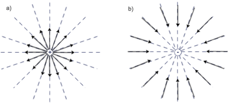
Powyższe rysunki przedstawiają tzw. pola centralne. Oznacza to, że pola te wywołane są przez ładunki punktowe. Jeżeli zaś naelektryzowana jest powierzchnia, to wytworzone zostanie takie pole, którego linie są do siebie równoległe.
Natężenie pola elektrostatycznego
Podobnie jak w polu grawitacyjnym, tak i w polu elektrostatycznym występuje pojęcie natężenia pola. Pole mówi nam jaka siła będzie działać na ładunek próbny, a wiemy, że siła ta jest zależna od ładunku źródła pola, i od odległość w jakiej ładunek próbny został umieszczony. To właśnie natężenie pola charakteryzuje nam to pole. Z definicji pole elektrostatyczne to stosunek siły działającej na ładunek próbny, do wartości tego ładunku (symbolem natężenia pola jest E):
Z powyższego wzoru wynika, że jednostką pola jest . Wyliczmy jeszcze wartość natężenia:
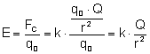 , gdzie Q jest ładunkiem źródła pola.
Jeżeli pole nie jest wywołane przez pojedyncze źródło, lecz np. dwa ładunki dodatnie, to by obliczyć natężenie pola w danym punkcie przestrzeni, to musimy zastosować zasadę superpozycji. Wyliczamy więc jaki był by wektor natężenia pola gdyby pole to było wywołane tylko przez jeden z tych ładunków ( ). Następnie podobne wyliczenia robimy ze względu na drugi ładunek źródłowy ( ). Te dwa wektory należy złożyć i dopiero długość wektora 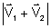 jest ostatecznym wektorem natężenia pola w danym punkcie.
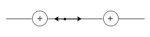
Praca w polu elektrostatycznym
Prowadząc rozważania na temat pracy w polu elektrostatycznym, przeprowadźmy podobne rozważania, jakie poczyniliśmy przy wyliczaniu pracy w polu grawitacyjnym. Niech mamy dane centralne pole wytworzone przez ładunek o wartości Q. Następnie umieśćmy w odległości r1 ładunek próbny q. Wykonajmy pracę polegającą na tym by przemieścić ten ładunek próbny na odległość r2 od źródła pola. By ładunek ten poruszał się cały czas z jednakową prędkością, to musimy cały czas działać na niego siłą równoważącą siłę Kulomba. Ale wraz ze zmianą odległości od źródła siła ta się zmienia i to odwrotnie proporcjonalnie do kwadratu odległości. Zastosować musimy średnią siłę działającą na ładunek próbny. Siła ta jest średnią geometryczną siły działającej na ciało w odległości r1 i w odległości r2:
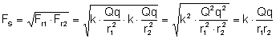
Pracę obliczymy ze wzoru 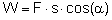 , gdzie α to kąt między wektorem siły a wektorem przesunięcia. W naszym rozważaniu może on wynosić 0°, lub 180°. Więc cos(α)=1 lub cos(α)=-1. "s" wyliczymy ze wzoru s=r2-r1
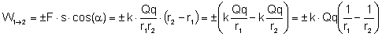
Aby określić czy praca jest dodatnia czy ujemna, musimy się zastanowić jaki jest kąt między wektorem przyłożonej przez nas siły a wektorem przesunięcia. Jeżeli ładunek próbny jest przyciągany przez źródło pola, a praca jaką wykonujemy przemieszcza ładunek ten bliżej źródła, to musimy zrównoważyć siłę przyciągającą (siłę Kulomba). Przyłożymy więc siłę która tworzy z wektorem przesunięcia kąt 180°. Zatem cos(α)=-1 - praca jest ujemna. Ale gdybyśmy ładunek próbny oddalali od ładunku źródłowego (ale źródło przyciąga ładunek próbny) to by zrównoważyć siłę Kulomba przykładamy siłę równoległą do wektora przesunięcia, więc α=0°, czyli cos(α)=1 - praca jest dodatnia.
Podobnie jak w przypadku pracy w polu grawitacyjnym, tak i tutaj ze wzoru wynika, że praca nie zależy od toru ruchu ładunku próbnego, a jedynie od odległości początkowej i końcowej od źródła pola.
Energia potencjalna w polu elektrostatycznym
Wyliczając energię potencjalną ładunku próbnego w danym punkcie pola skorzystamy z takiej własności, że różnica energii potencjalnych w dwóch punktach jest równa pracy wykonanej przy przemieszczaniu tego ładunku próbnego z jednego punktu do drugiego (tak samo robiliśmy wliczając energię potencjalną w polu grawitacyjnym). Aby wyliczyć energię potencjalną w danym punkcie należy przemieścić ten ładunek próbny do tego punktu z miejsca gdzie energia potencjalna równa jest zero. Takie miejsce jest w punkcie nieskończenie oddalonym od źródła.
Zatem: 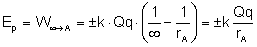
Znak dodatni, czy ujemny energii potencjalnej wybieramy w zależności czy ładunek ze źródłem się odpychają, czy przyciągają.
Potencjał elektrostatyczny
Drugą obok natężenia pola wielkością charakteryzującą pole jest potencjał elektryczny. Mówi on nam jaką energię będzie miał ładunek próbny umieszczony w danym punkcie pola. Z definicji:
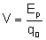
Jak widać potencjał nie jest wektorem, a jest skalarem. Jednostką potencjału jest:
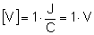
czyli wolt.
Wyprowadźmy wzór na potencjał elektrostatyczny:
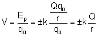
Jeśli ładunek źródła jest ujemny wówczas potencjał elektrostatyczny jest ujemny, gdy źródło jest dodatnie potencjał jest dodatni.
Powierzchnie ekwipotencjalne
Załóżmy, że źródłem pola elektrostatycznego jest ładunek punktowy (czyli pole jest polem centralnym). Ze wzoru wynika, że wszystkie punkty przestrzeni, które są od niego jednakowo oddalone, mają równy potencjał. W przestrzeni zbiór takich punktów tworzy powierzchnie kuli. A ładunek źródłowy znajduje się w środku tej kuli.
Gdyby jednak pole elektrostatyczne nie miało charakteru centralnego, to i tak możemy wyznaczyć takie powierzchnie, że ładunek próbny umieszczony w dowolnym punkcie tej powierzchni będzie miał taki sam potencjał. Np. w przypadku pola jednorodnego taką powierzchnią jest każda płaszczyzna prostopadła do linii pola.
Związek między natężeniem a potencjałem
Wykażemy teraz, że dwie wielkości charakteryzujące pole: natężenie i potencjał nie są od siebie wielkościami niezależnymi.
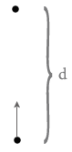
Wiemy, że praca wykonana przy przemieszczeniu ładunku z punktu A do B równa jest różnicy energii potencjalnych w tych punktach:
Ale pracę tą możemy wyliczyć też w inny sposób - z definicji pracy:
W naszym przykładzie: , , a więc po porównaniu tych prac otrzymujemy:
Wprowadźmy teraz kolejne oznaczenie. Napięciem nazywać będziemy różnicę potencjałów i oznaczamy symbolem U. Jednostką napięcia tak jak i potencjału jest wolt. Więc powyższy wzór wyglądać będzie następująco:
Zamiast siły podstawiamy wzór: , gdzie E to natężenie pola elektrostatycznego:
A więc natężenie pola elektrostatycznego jest wprost proporcjonalne do napięcia.
Dielektryki w polu elektrostatycznym
Poza przewodnikami istnieje jeszcze inna grupa ciał, której właściwości w tym temacie poznamy. Są nimi dielektryki. Na początek należy się wyjaśnienie, czym różni się dielektryk od przewodnika. Przewodniki to takie ciała, w których ładunki mogą swobodnie przemieszczać się. Przykładem przewodnika jest chociażby miedziany drut. Jeżeli naniesiemy na niego ładunek, a następnie dotkniemy go ręką, to ten ładunek "przepłynie" z przewodnika na nas i w ten sposób rozładujemy go. Ale jeżeli naelektryzujemy dodatnio szkło, które jest dielektrykiem, to dotknięcie tego szkła przez naszą rękę nie spowoduje jego rozładowania. Z naszej ręki przepłyną elektrony jedynie w miejsce dotknięcia, ale szkło to nadal będzie naelektryzowane w miejscach gdzie go nie dotykamy.
Elektrony w dielektryku nie mogą się swobodnie przemieszczać. Ograniczone są przez atomy i cząsteczki, których nie mogą opuścić. Ale jeżeli umieścimy dielektryk w polu elektrostatycznym między ładunkiem dodatnim a ujemnym to ułożenie elektronów i jąder atomowych zmienia się. Elektrony ustawiają się tak by być jak najbliżej ładunku dodatniego, a jądra jak najbliżej ładunku ujemnego. Te cząsteczki zachowują się jak dipole. Ułożenie takie wykazują wszystkie cząsteczki w dielektryku. Tak tworzy się łańcuch dipoli z ładunkami dodatnimi skierowanymi z jednej strony, a ujemnymi skierowanymi w drugą stronę. Takie zjawisko nazywamy polaryzacją dielektryka.
Spolaryzowany dielektryk tworzy własne pole wewnętrzne, którego wektor natężenia jest zawsze skierowany przeciwnie do wektora natężenia pola, w którym umieszczony został dielektryk. W ten sposób zmniejszane jest wypadkowe natężenie pola.
Jeżeli dielektryk umieścimy między okładkami naładowanego kondensatora, to zmniejszy się w ten sposób napięcie tego kondensatora, ponieważ . Jeżeli napięcie zmniejsz się to zwiększy się pojemność kondensatora (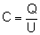 - ładunek pozostaje przecież taki sam). Możemy wysnuć następujący wniosek:
|
Wykorzystując te wiadomości możemy badać względną przenikalność dielektryczną substancji z której zbudowany jest dielektryk.
Niech C0 - to pojemność kondensatora z próżnią między płytkami (z powietrzem), natomiast C - to pojemność kondensatora z dielektrykiem między płytkami. Sprawdźmy czym jest stosunek tych wielkości:
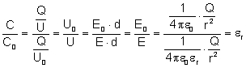
Stosunek pojemności kondensatora z dielektrykiem do pojemności kondensatora z próżnią między okładkami jest względną przenikalnością dielektryczną dielektryka.
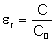